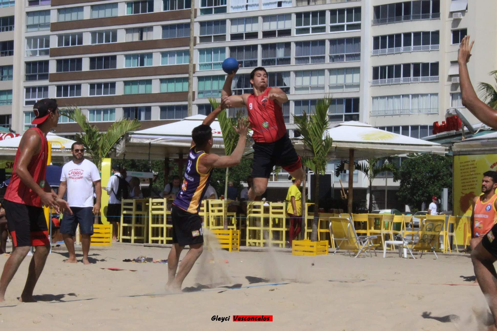

BIGODE

Sobre mim:
Meu nome � Bernardo Magalh�es Braga de Souza, tenho 24 anos, atleta de handebol desde os 7 anos, por�m apaixonado por futebol. O esporte tem 50% na minha forma��o, disciplina, resiliencia e consentra��o s�o as principais skills que adiquiri ao longo dos anos no esporte. Adoro series como Breaking Bad, Prison Break, Narcos. Sou um completo palha�o, gosto muito de fazer brincadeiras e interagir com pessoas, al�m de adorar um filme pastel�o.
N�o possuo muitos personagens favoritos, nem programas prediletos, mas sempre que tenho tempo paro um pouco para assistir Largados e Pelados e Monstros do Rio, programas que me fazem destrair a mente e me manter focado em alguma coisa quando estou meio disperso.
Tenho como inspira��o principalmente atletas, e os meus favoritos s�o Cristiano Ronaldo e Rafael Nadal, n�o por serem os melhores e nem por serem os mais habilidosos, s�o atletas modelos, um � l�der nato, um competidor exemplar, o outro o cara mais treinado que ja pude acompanhar, s�o dois caras muito parecidos e com uma energia que s� eles conseguem trazer para os espectadores. Tenho tamb�m como inspira��o pessoas proximas como meu pai Humberto, meu irm�o Rafael e meu melhor amigo Artur Costa, o primeiro me ensinou cada ponto da vida sobre lealdade, o segundo me surpreende cada dia e � o cara mais inteligente que ja conheci, o terceiro me mostrou o real significado de VIDA.
